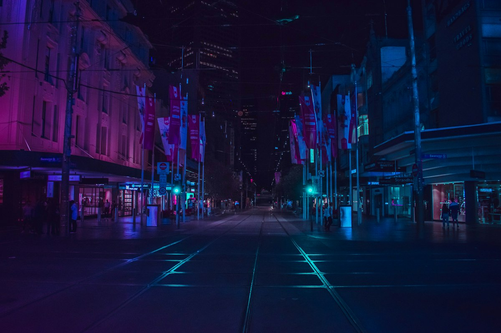

LIVE FROM SHANGHAI · 31.23°N 121.47°E
NIGHT WAVE
城市入睡以后，
我们开始说话。
A late-night radio station for the beautifully awake.
24 小时直播，无广告，无算法，只有声音。
01 TONIGHT'S FREQUENCY
今晚的
频率
四段声音，陪你穿过城市最安静的几个小时。没有歌单推荐，只有人的选择。
点击任一节目，立即收听 ↘

02 MIDNIGHT FEATURE
TRANSMISSION
NO. 041
02:00 — 04:00 · 失眠者俱乐部
越夜，
越清醒。
这是一档关于失眠的节目。没有催眠的白噪音，只有真实的人、真实的夜晚，以及那些白天说不出口的话。今晚，我们聊「一个人住久以后」。
03 FROM THE ARCHIVE
声音
档案
错过直播，也可以慢慢听。
一些被城市藏起来的声音，在这里重新浮上来。
04 OUR FREQUENCY
夜波是一间没有算法、没有热搜、没有「猜你喜欢」的电台。我们只做一件事：在城市的深夜，把话筒交给那些值得被听见的人。
声音，
应该慢一点。
SOUND SHOULD TAKE ITS TIME.
- 2019
- 开播
- 214
- 位夜间来客
- 0
- 条广告
夜间会员